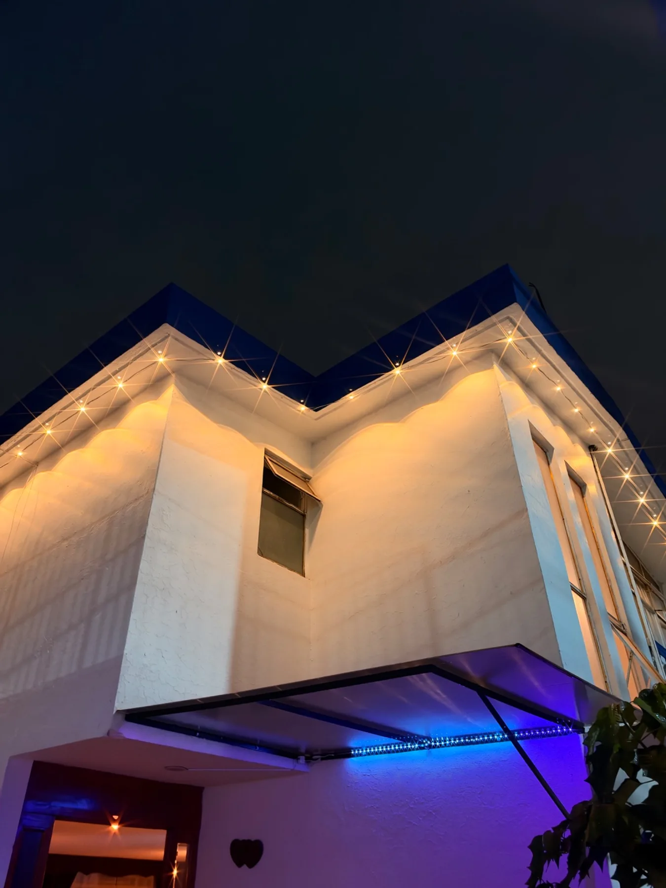

60 LED/m como base
30 LED/m cuando conviene y hasta 144 LED/m para aplicaciones de mayor densidad.
Tiras LED, controladores, fuentes, kits y herramientas técnicas. Compra por componente o deja que PixelLab dimensione tu instalación.


Potencia · fuente · cableado · inyección · costo operativo
Abrir herramientas →La diferencia no es sólo la tira: es cómo dimensionamos, explicamos, armamos e integramos la solución completa.
30 LED/m cuando conviene y hasta 144 LED/m para aplicaciones de mayor densidad.
5050 y otras tecnologías según aplicación, con FCOB/COB definidos por separado.
El enfoque de 2 oz de cobre favorece disipación y ayuda a reducir calentamiento y caída de tensión.
Cuando la especificación del producto lo respalda: 50,000+ h, ≈17 años a 8 h/día en condiciones saludables.
Kits pensados para mínima intervención técnica y sin equipo adicional cuando el proyecto lo permite.
Selección, dimensionamiento, configuración WLED y acompañamiento antes y después de comprar.
Tira, controlador, fuente, perfil, cable o kit completo: sólo lo que realmente necesitas.
Hogar, comercio, fitness, estudio, oficinas, fachadas y domótica.
Configuraciones orientadas a distintos usos, con componentes compatibles y precio de volumen.
Dinos qué quieres iluminar y genera una primera propuesta de tira, potencia y fuente.
Inspirado en el enfoque técnico de WLED System Architect: números claros, recomendaciones y márgenes explícitos.
Consumo, fuente y protección para la instalación.
Cuánto cuesta encender la iluminación por día, mes y año.
Orientación para cableado, recorrido e inyección.
Voltaje, densidad, chipset y uso recomendado.
Una muestra inicial de lo que podemos diseñar e implementar: fachada, ambiente, color dinámico y control.
Una instalación pensada para destacar arquitectura y generar ambientes diferentes durante la noche.
La misma instalación permite una escena de color y otra con una luz ambiental más cálida.
Contenido para elegir mejor, instalar correctamente y aprovechar WLED, domótica e IoT.
Qué cambia cuando agregas un canal blanco dedicado.
Cómo elegir voltaje según corriente, recorrido y aplicación.
Controlador, alimentación, configuración inicial y seguridad.
Checklist de alimentación, datos, tierra común e inyección.
Escríbenos por WhatsApp y te ayudamos a dimensionar tu proyecto antes de comprar.